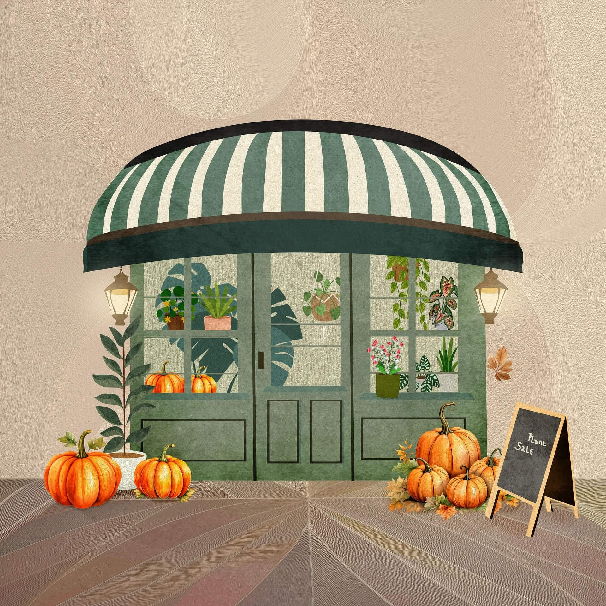

Poznaj świat gier RPG.
Sklep to same w sobie świetne przedsięwzięcie. Daje właściwie same plusy, a prowadzenie go to czysta przyjemność. Nie mniej aby dojść do tego ekonomicznego poziomu nie raz trzeba się wspinać po szczebelkach żmudnej pracy.

Czy praca w sklepie jest trudna, łatwa, średnia? To zależy od tego jak kto w nim sobie radzi. Nie mniej trzeba powiedzieć, że sam sklep jest podzielony na tą część dla klientów zwaną po prostu sklepem czy w żargonie sprzedawców stanem, magazyn oraz strukturę sklepu z której wyłaniają się jego instancje. Wiele instancji sklepu może być rozmieszczonych po całym mieście, wielu miastach, całym kraju, kontynencie czy nawet świecie. Te instancje mogą nazywać się zupełnie inaczej, posiadać różny asortyment albo mieć tą samą nazwę, asortyment, ujednoliconą dokumentację. Tak a priori, instancja też może być jedna.
Więc sklep to wyzwanie ekonomiczne. Mamy asortyment, przedsiębiorców, inwestorów i co by tu zrobić żeby mieć jeszcze więcej? No właśnie, może warto zainteresować się tym aby w kraju było coraz to więcej sklepów różnego rodzaju, spożywcze, odzieżowe, do treningów, informatyczne, z artykułami do szkoły, biurowymi, itd. Najpierw jednak zanim sklep się założy trzeba przejść pewną drogę kształcenia tudzież zbierania doświadczenia w wielu zawodach. Taka wiedza, doświadczenie, to wszystko potem owocuje zyskami z prowadzonego sklepu. Warto więc poświęcić swój czas na naukę by potem odcinać tickety jak to mawiam. Uczymy się i tak, w szkole przedmiotu, w pracy fachu. To co że ktoś zaczyna pracę w niszowych branżach, ważne że z czasem uczysz się tego fachu i idziesz sobie coraz to wyżej po drabince ekonomicznej.
Niejedna osoba zaczynała pracę od zmywania naczyń, a dziś prowadzi sieć sklepów, taką globalną sieć. Jak w domu zmywasz naczynia to już do przodu. Nabywasz nowe umiejętności, które potem ci się przydadzą. Sam pracowałem w wielu zawodach i uważam, że podejmowanie się wielu zadań jest dobrym rozwiązaniem. Ktoś powie, a co ma wspólnego mycie naczyń z prowadzeniem sklepu? 😸 Kiedyś pewna osoba myła naczynia. Po jakimś czasie poszła do innej pracy, i kolejnej, i kolejnej, aż w końcu założyła swój własny sklep RTV/AGD. To zmywanie naczyń tak za tą osobą chodziło, że w końcu zaczęła sprzedawać zmywarki. Zapotrzebowanie na rynku na sprzęt RTV/AGD było tak duże, że w niedługim czasie sklep rozrósł się na cały świat.